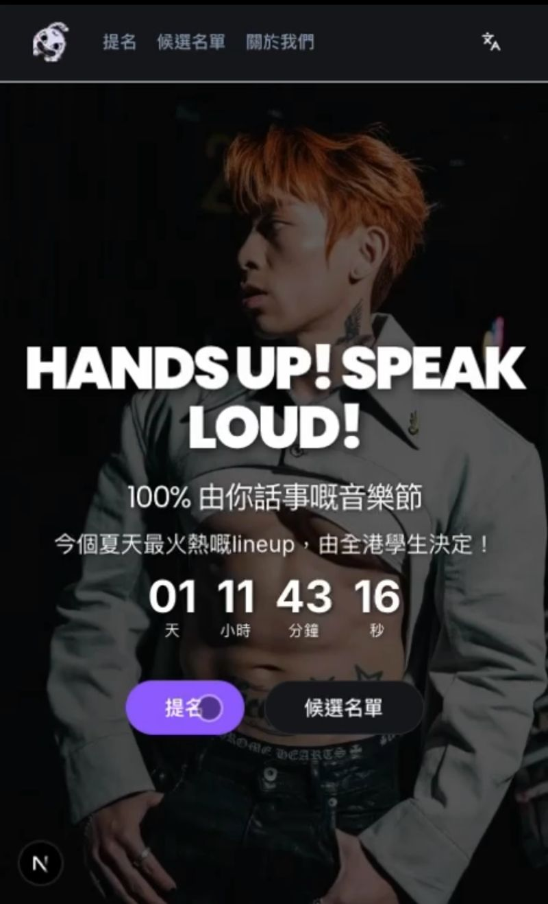
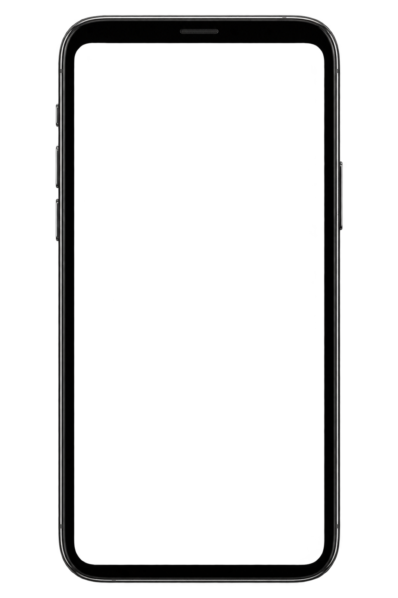
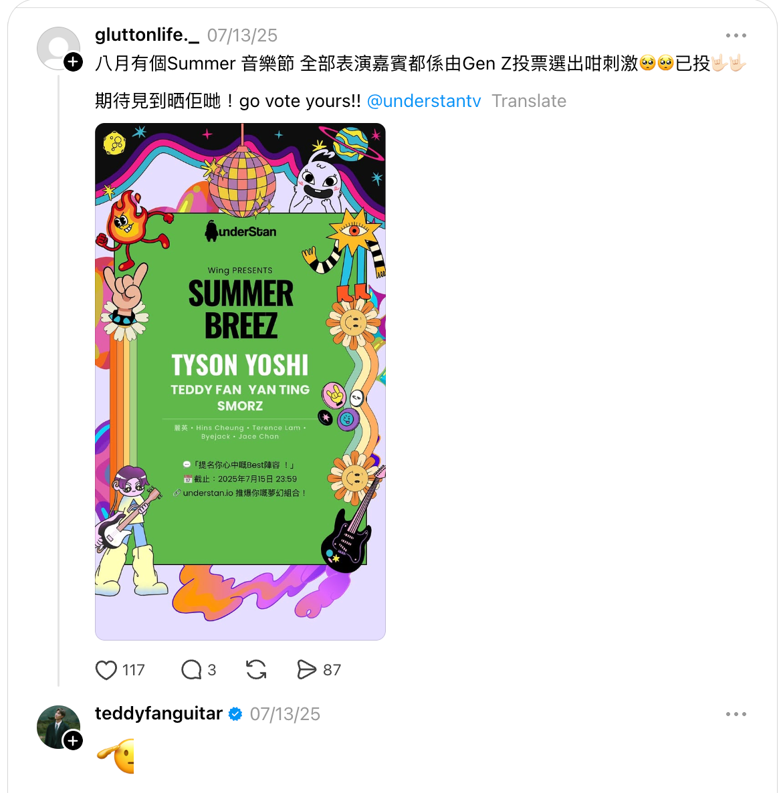

underStan B2S Music Festival
Bringing personalised festival-lineup posters to Hong Kong



A campaign website where university students could create and share their ideal festival lineup. Market research showed that self-made lineup posters were gaining popularity overseas. We brought the format to Hong Kong to build festival awareness through something students could personalise and share with their own social circles.
The poster gave students a way to express their own music tastes through the campaign. Choosing their own lineup made participation personal, while the finished image gave them something to share beyond the website.
I led requirements definition, UX and AI-assisted development with Firebase Studio. The flow centred on creating that poster: selecting or adding artists, choosing a style, and personalising the festival and creator names. Student-eligibility confirmation was incorporated into the experience, with the selected details carried through to the finished poster.
Results: Launched in July 2025 and attracted 6,000+ visitors, with participant posts showing personalised posters shared beyond the website.